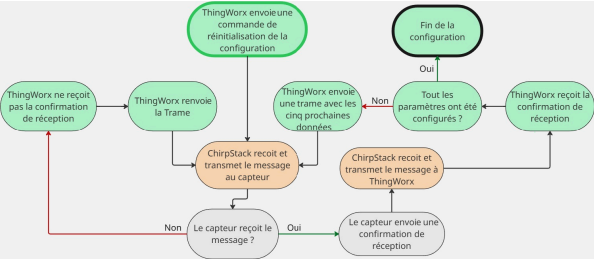

Développement d’une solution pour la configuration automatique de capteurs GPS
Stage – Airbus Defence and Space · Communication LoRaWAN · Plateforme IoT ThingWorx · Automatisation
LoRaWANThingWorxIoTCompact Trackers (Abeeway)
Lors de mon stage chez Airbus Defence and Space, j'ai travaillé sur une solution consistant à développer une solution
permettant la configuration à distance et de manière automatique de capteurs via LoRaWAN.
Les capteurs concernés étaient des Compact Trackers d’AbeewayⓇ.
1. Objectif
Le but de cette mission était de déployer ces Compact Trackers sur un grand nombre d’équipements logistiques ou industriels, afin de faciliter leur
localisation et réduire le temps nécessaire pour les retrouver. Le client avait commandé 250 dispositifs destinés à équiper divers matériels
comme des échelles, des boites a outils ou encore des élévateurs.
La configuration manuelle représentant une tâche fastidieuse on m'a chargée de concevoir une solution permettant la configuration automatique
de ces capteurs lors de leur première connexion au réseau.
L’objectif était alors de réduire au maximum l’intervention humaine lors la configuration des cpateurs : elle devait être envoyée automatiquement
depuis ThingWorx lorsqu'ils étaient allumés et connectés pour la première fois au réseau. Cette automatisation permettait de gagner un
temps considérable lors du déploiement.
But : automatiser la configuration des capteurs pour la rendre plus rapide et fiable.
2. Démarche
2.1 Envoi de la configuration via LoRaWAN
J’ai tout d’abord exploré la possibilité d’envoyer la configuration via LoRaWAN. En regardant le
projet déjà déployé sur ThingWorx je me suis rendue compte que non seulement c’était
possible mais en plus cela avait déjà été mis en place.
Cependant, l'utilisation de LoRaWAN impose de fortes contraintes :
Une taille de payload limitée (environ 5 paramètres par message).
Une fréquence restreinte d’envoi (un message toutes les 5 minutes).
Or les capteurs ont 200 paramètres de configuration. L'envoi des données aurait donc pris 250 minutes (ou 4 heures).
Avec un collègue (Valentin P.), nous avons trouvé une stratégie : ne modifier que les paramètres différents de la
configuration par défaut. Ce choix a permis de réduire le nombre de trames nécessaires, passant d’environ 200 à seulement une vingtaine.
Un autre problème restait toutefois à résoudre : que faire si un capteur n’avait pas la configuration par défaut initialement ?
Nous ne pouvions pas demander au capteur de nous envoyer ses
paramètres cinq par cinq pour la même raison que précédemment. Nous avons alors trouvé un moyen de réinitialiser les capteurs
via le protocole LoRaWAN.
Schéma de la logique que nous avons décidé de mettre en place
2.2 Développement de la solution
J’ai ensuite développé l’ensemble du script de configuration.
Comme c’était ma première expérience avec l’envoi de données vers un capteur LoRaWAN, j’ai dû me familiariser avec les trois classes de capteurs LoRaWAN.
Les Compact Trackers étant de classe A, ils ne peuvent recevoir une configuration qu’au moment où ils envoient eux-mêmes une donnée.
J’ai donc conçu un système basé sur les événements event_up de ThingWorx :
A chaque transmission du capteur, un payload de configuration lui est renvoyé.
La configuration est découpée en lots de 5 paramètres.
Les lots sont stockés dans un tableau associé à l’objet Thing correspondant au capteur.
Restait à garantir que la configuration avait bien été appliquée. En effet, avec LoRaWAN, les messages peuvent être perdus.
Heureusement, les Compact Trackers renvoient un ACK, qui confirme non seulement la réception mais aussi le contenu exact du message reçu.
J’ai donc mis en place un script supplémentaire permettant de :
Comparer les ACK attendus et reçu.
Renvoyer les trames en cas d’échec.
Envoyer les lots suivants uniquement si la réception des précédents est confirmée.
Pour automatiser totalement le processus, j’ai ajouté une propriété dans le Thing Template :
Cette propriété est initialisée à 1 lors de la création d’un nouvel objet.
Elle déclenche automatiquement la configuration.
Elle est remise à 0 une fois la configuration terminée.
Il reste possible de relancer une configuration à distance en réactivant la propriété.

Schéma de l'architecture logique mise en place.
3. Résultats
Grâce à cette solution, les Compact Trackers reçoivent désormais automatiquement leur configuration lors de leur première connexion à ThingWorx.
Cette mission m’a permis d’appliquer une démarche complète d’ingénierie :
Analyse d’un besoin.
Etude de l’existant.
Conception et structuration logicielle.
Prise en compte de contraintes matérielles et protocolaires.